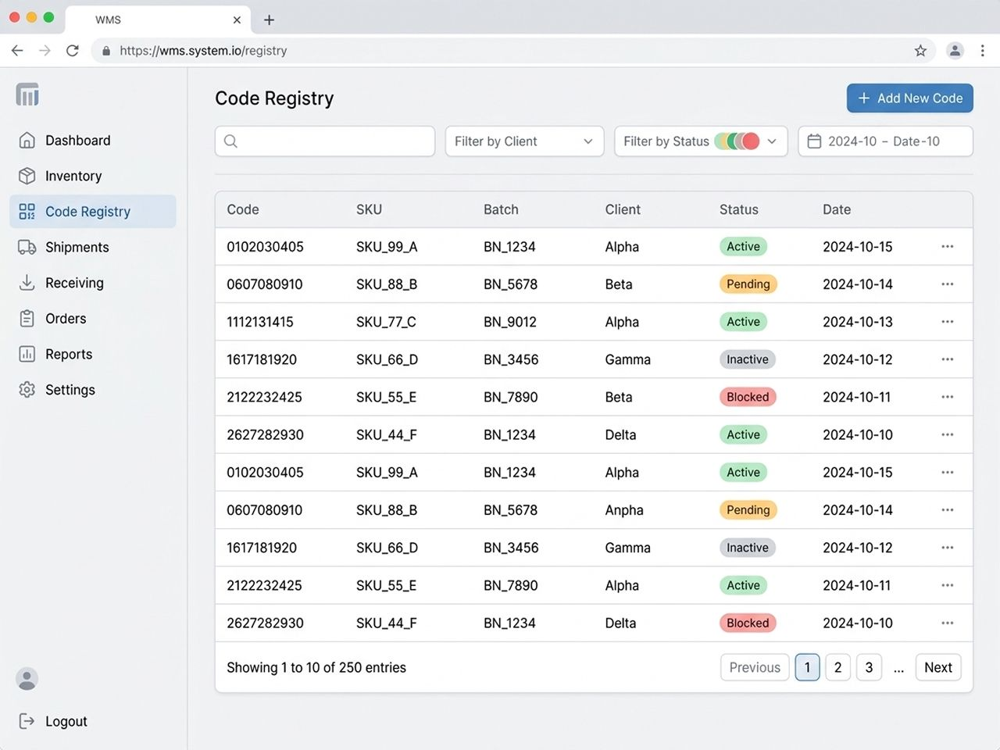

Маркировка «Честный ЗНАК» на складе
Сканируем Data Matrix каждой товарной единицы при приемке и отгрузке, сопоставляем код с артикулом, фиксируем результат в WMS и формируем реестры в формате XLSX или XML
Контроль на входе, на выходе или на обоих этапах
Поштучный учет кодов в WMS
Реестр по каждой приемке и каждому сформированному заказу
Карантинная зона для товара с отсутствующей этикеткой, дублем или несоответствием
Что выполняет склад
«Космос-Логистик» выполняет поэкземплярное сканирование кодов Data Matrix терминалами сбора данных. Сканирование терминалом сбора данных сокращает ручной ввод и снижает риск ошибок при приемке, комплектации и отгрузке. Каждый отсканированный код фиксируется в WMS и связывается с артикулом, поставкой и поклажедателем. По заданию поклажедателя контроль выполняется при приемке, перед отгрузкой или на обоих этапах
Поклажедатель — организация, индивидуальный предприниматель или физическое лицо, передающие товар на склад для хранения и складской обработки
Термин «поклажедатель» используется для стороны, передающей вещь хранителю по договору хранения
| Операция | Условия выполнения |
|---|---|
| Поштучное сканирование Data Matrix | Стандартная операция |
| Контроль кодов при приемке | Стандартная операция |
| Контроль кодов перед отгрузкой | Стандартная операция |
| Сопоставление кода с артикулом | Стандартная операция |
| Учет партии и срока годности | При наличии данных и настроенного задания |
| Входной реестр XLSX или XML | Стандартная операция |
| Реестр кодов по заказу XLSX или XML | Стандартная операция |
| Агрегация «единица — короб — паллета» | По согласованному регламенту |
| Обмен документами через оператора ЭДО «Контур» | По отдельному соглашению |
| Передача электронных документов в ГИС МТ | По отдельной согласованной схеме и при наличии необходимых полномочий |
Контроль кодов при приемке
После разгрузки партия принимается по артикулам. Сотрудник склада сканирует терминалом сбора данных код Data Matrix каждой товарной единицы. WMS фиксирует код и связывает его с артикулом, поставкой и поклажедателем
При наличии необходимых данных и настроенного задания дополнительно учитываются партия и срок годности. После завершения сканирования и до размещения товара система формирует реестр фактически принятых кодов
1
Получить задание и ожидаемый состав поставки
2
Разгрузить товар и выполнить приемку по артикулам
3
Просканировать Data Matrix каждой единицы терминалом сбора данных
4
Сопоставить код с артикулом в WMS
5
Поместить проблемные единицы в карантинную зону
6
Сформировать входной реестр XLSX или XML
7
Передать реестр поклажедателю
8
Разместить принятый товар на хранение
Контроль при комплектации и отгрузке
Заказ комплектуется по артикулам на основании заявки поклажедателя. После завершения комплектации груз переводится в WMS в операцию «Упаковка»
В операции «Упаковка» выполняются дополнительная упаковка и обязательное сканирование Data Matrix всех товарных единиц, вошедших в заказ. Коды привязываются к номеру заказа. После завершения операции формируется отдельный реестр кодов конкретной отгрузки
1
Получить заявку поклажедателя
2
Отобрать товар по артикулам
3
Передать собранный заказ в операцию «Упаковка»
4
Выполнить дополнительную упаковку
5
Просканировать Data Matrix каждой единицы
6
Привязать коды к номеру заказа
7
Сформировать выходной реестр XLSX или XML
8
Передать реестр поклажедателю
9
Передать заказ к отгрузке
Что проверяет WMS
При сканировании WMS выполняет складскую проверку кода маркировки и фиксирует результат операции
- Считывание Data Matrix терминалом сбора данных
- Сопоставление кода с артикулом товара
- Выявление повторного появления кода в учетном контуре склада
- Привязка кода к поставке
- Привязка кода к поклажедателю
- Привязка кода к сформированному заказу
- Учет партии и срока годности при наличии необходимых данных и настроенного задания
- Сохранение истории складских операций с кодом
Стандартная складская проверка не включает онлайн-запрос государственного статуса кода в ГИС МТ
Реестры кодов
«Космос-Логистик» формирует отдельные реестры по операциям приемки и отгрузки. Реестр содержит данные о кодах, фактически отсканированных сотрудниками склада терминалами сбора данных
| Реестр | Момент формирования | Формат | Содержание |
|---|---|---|---|
| Входной реестр | После сканирования партии и до размещения | XLSX или XML | Поставка, артикул, код маркировки, результат обработки; партия и срок годности при настроенном учете |
| Реестр заказа | После упаковки и до отгрузки | XLSX или XML | Номер заказа, артикул, код каждой отгружаемой единицы |
| Реестр агрегации | После формирования короба или паллеты | Согласованный формат | Код упаковки и связанные с ним коды вложенных единиц |

Обмен электронными документами
В стандартной схеме реестры XLSX или XML передаются поклажедателю. По дополнительному соглашению возможен обмен электронными документами через оператора ЭДО «Контур»
До начала обмена согласовываются виды документов, формат данных, полномочия сторон, порядок подписания, используемая электронная подпись, сроки передачи и порядок обработки отклонений
Передача электронных документов в ГИС МТ выполняется только в рамках отдельно согласованной схемы и при наличии необходимых полномочий
Агрегация кодов
По согласованному регламенту «Космос-Логистик» выполняет агрегацию на уровнях товарной единицы, короба и паллеты. WMS сохраняет связь между кодами вложенных единиц и кодом групповой или транспортной упаковки
- Код товарной единицы
- Код короба
- Код паллеты
Требования к идентификаторам коробов и паллет, составу реестра и изменению агрегации согласовываются с поклажедателем до начала работ
Ошибки и карантинная зона
Товар с проблемой маркировки отделяется от доступного остатка и размещается в карантинной зоне. Склад фиксирует выявленную проблему и ожидает дальнейшее задание поклажедателя
| Ситуация | Действие склада | Действие по заданию поклажедателя |
|---|---|---|
| Data Matrix не считывается | Поместить товар в карантин | Повторная проверка, перемаркировка, возврат или другой сценарий |
| Этикетка отсутствует | Зафиксировать отсутствие и поместить товар в карантин | Передать корректную этикетку, вернуть товар или выбрать другой сценарий |
| Обнаружен дубль кода | Заблокировать дальнейшую складскую обработку единицы | Проверить происхождение кода и определить дальнейшее действие |
| Код не соответствует артикулу | Отделить единицу от доступного остатка | Исправить задание, подтвердить пересорт, выполнить перемаркировку или возврат |
| Повреждена упаковка | Зафиксировать дефект и поместить товар в карантин | Переупаковать, перемаркировать, вернуть или списать |
| Возвращен маркированный товар | Просканировать код, осмотреть товар и поместить его в карантин | Вернуть в доступный остаток, переупаковать, перемаркировать, вернуть поставщику или списать |
Склад не возвращает проблемный товар в доступный остаток и не выполняет операции с маркировкой без задания поклажедателя
Что требуется для запуска
- Товарная группа
- Перечень артикулов
- Ожидаемое количество единиц
- Правила сопоставления кодов и артикулов
- Требования к учету партии и срока годности
- Контрольные точки: вход, выход или оба этапа
- Требования к агрегации
- Регламент обработки ошибок и возвратов
Стоимость обработки
Стоимость рассчитывается после получения данных о товарной группе, количестве единиц и артикулов, требуемых контрольных точках, состоянии маркировки, необходимости распаковки, переупаковки, агрегации и обмена данными
FAQ
-
«Космос-Логистик» сканирует Data Matrix при приемке и отгрузке, сопоставляет коды с артикулами, фиксирует результаты в WMS и формирует реестры XLSX или XML. Агрегация и обмен электронными документами выполняются по согласованию
-
Да. Код каждой маркированной единицы считывается терминалом сбора данных и фиксируется в WMS
-
Да. После приемки и сканирования партии поклажедатель получает входной реестр кодов в формате XLSX или XML
-
Да. После комплектации заказ переводится в операцию «Упаковка», где коды всех товарных единиц сканируются и привязываются к заказу
-
Да. При сквозном контроле коды сканируются при приемке и повторно перед отгрузкой сформированного заказа
-
Поклажедателю передается реестр кодов, фактически отсканированных при приемке партии
-
Поклажедателю передается отдельный реестр кодов маркировки товарных единиц, вошедших в конкретный заказ
-
Реестры предоставляются в формате XLSX или в машиночитаемом формате XML
-
WMS сопоставляет код с артикулом, фиксирует его принадлежность к поставке и заказу, выявляет повторное появление кода в учетном контуре и сохраняет историю складских операций
-
Да. Партия и срок годности учитываются при наличии необходимых данных и настроенного задания
-
Онлайн-проверка государственного статуса кода не входит в стандартную складскую услугу
-
В стандартной схеме склад передает поклажедателю реестры XLSX или XML. Передача электронных документов через ЭДО и в ГИС МТ выполняется только по отдельному соглашению и при наличии необходимых полномочий
-
XML-реестр содержит результаты складского сканирования. Электронный документ ЭДО формируется в установленном формате, подписывается уполномоченными сторонами и передается через оператора электронного документооборота
-
Товар помещается в карантинную зону до получения задания поклажедателя
-
Дальнейшая складская обработка единицы блокируется. Товар помещается в карантин, а информация о проблеме передается поклажедателю
-
Товар отделяется от доступного остатка и помещается в карантин. Дальнейшие действия выполняются по заданию поклажедателя
-
Отсутствие этикетки фиксируется при приемке. Товар помещается в карантин до передачи поклажедателем корректной этикетки или другого задания
-
Возвращенная единица сканируется, осматривается и помещается в карантин. Поклажедатель определяет дальнейший сценарий обработки
-
Да. По согласованному регламенту коды товарных единиц связываются с кодами коробов и паллет
-
Базовые форматы передачи — XLSX и XML. Дополнительная интеграция согласовывается отдельно
-
Решение принимает поклажедатель. Склад выполняет полученное задание и фиксирует результат операции в WMS
-
Стоимость зависит от количества единиц и артикулов, контрольных точек, состояния маркировки, необходимости распаковки, переупаковки, агрегации и выбранного формата обмена
.order_form — действующая форма обратной связи (ТЗ, задание 2).События формы chestny_znak_form_start / form_submit / phone_click настраивает разработчик.